拼圖 04 · 司法 · The Justice Piece
The Justice Piece
司法拼圖未進場？
少年保護制度如何跨出警政體系——讓少年保護不只停留在末端。
鄭瑞隆教授從少年保護制度切入，關切它如何跨出警政體系。他主張少年保護不能只停留在警政與司法末端，而要建立跨體系的支持與轉銜，承接高風險少年的真實需求。
Core Thesis · 核心論述
- 跨出警政末端。少年保護不能只停留在警政與司法末端。
- 建立跨體系轉銜。要建立跨體系的支持與轉銜，承接高風險少年的真實需求。
- 接回支持網絡。把觸法與偏差的少年，接回家庭與教育的支持網絡。
- 別讓孩子掉出去。避免高風險少年在系統夾縫中流失。
少年保護不能只停留在警政與司法末端，要把觸法與偏差的少年，接回家庭與教育的支持網絡。
鄭瑞隆 國立中正大學 教育學院 院長
簡報投影片 · Slides
共 14 張，由講者提供、原樣呈現。點擊任一張可放大檢視。
01
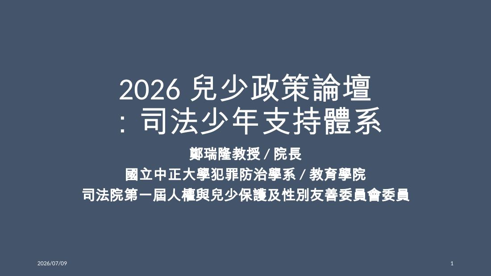
02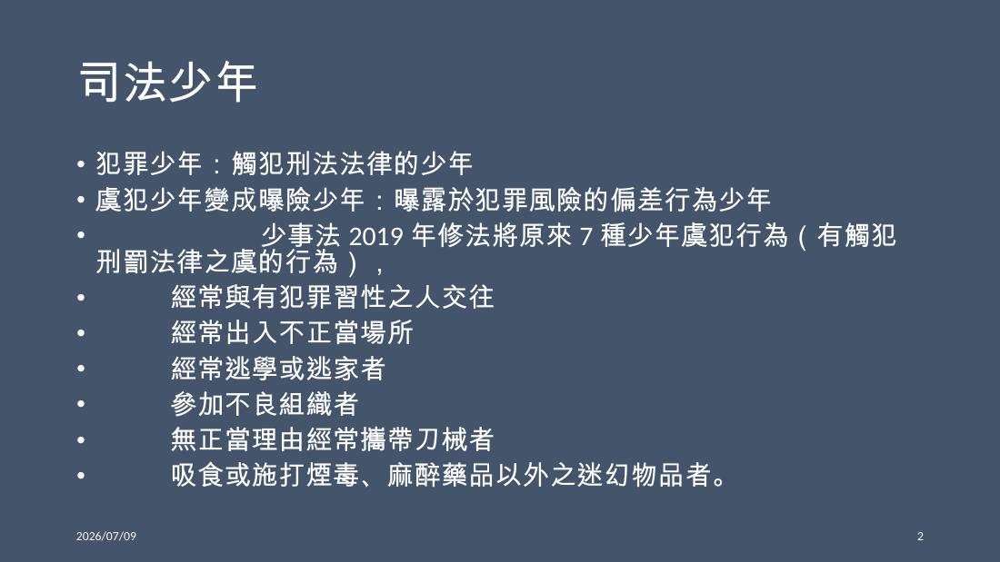
03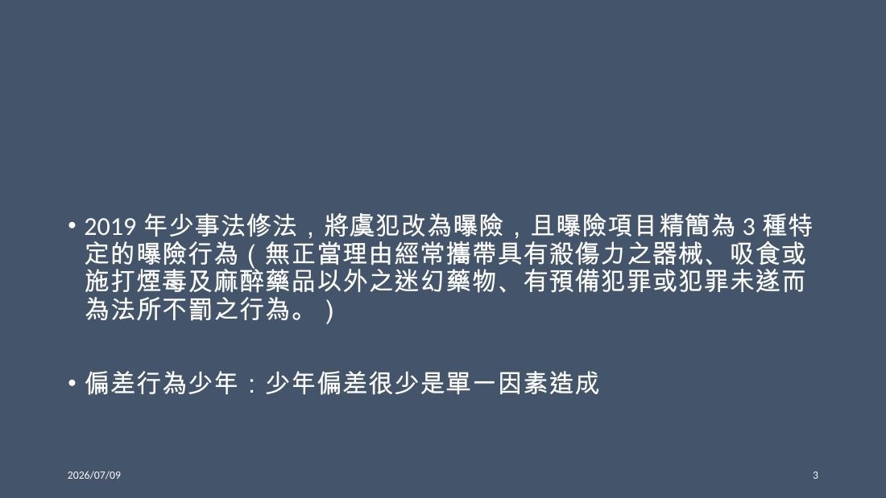
04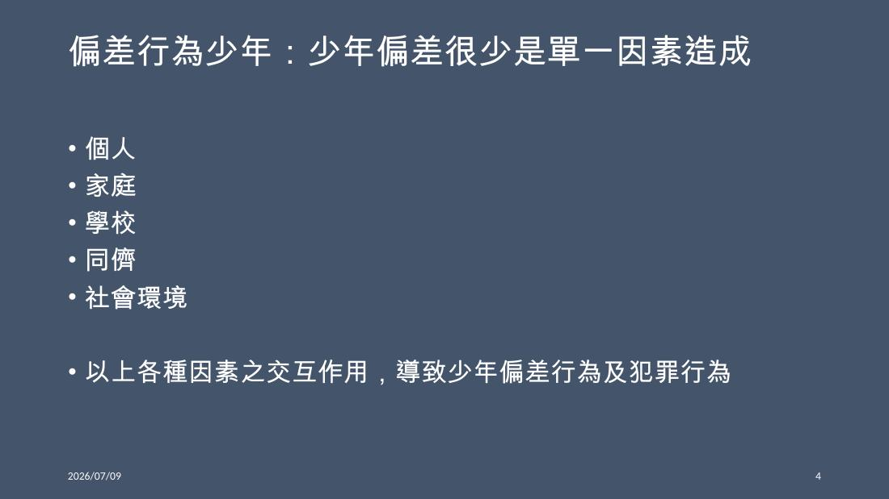
05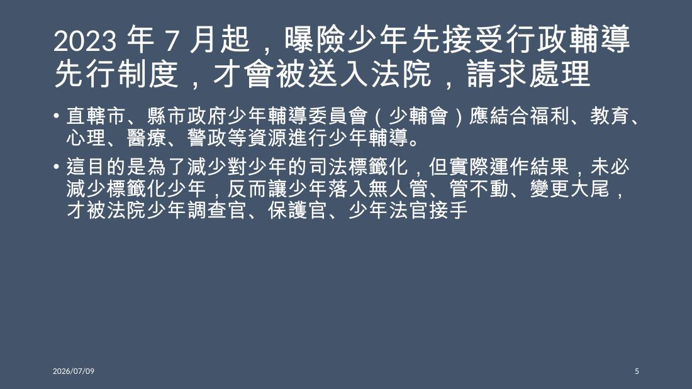
06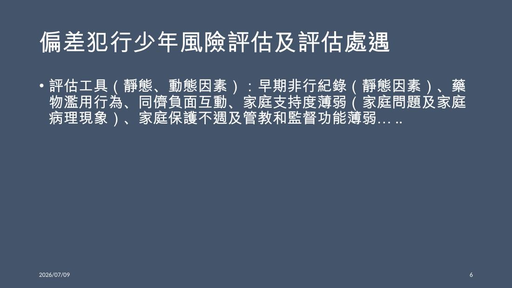
07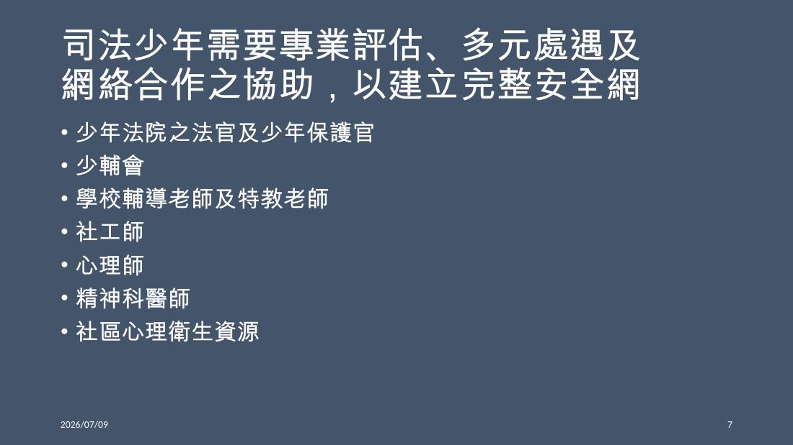
08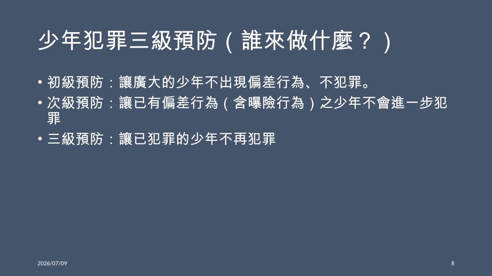
09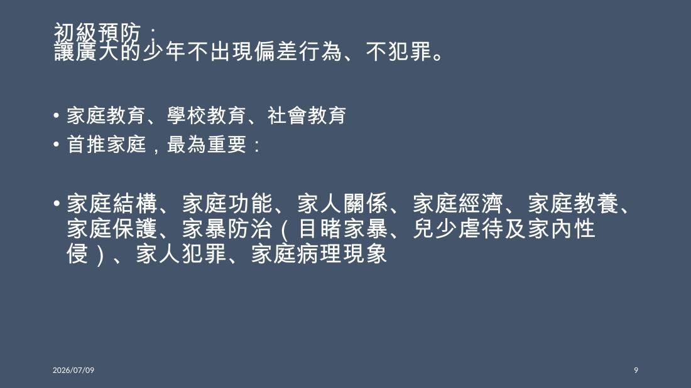
10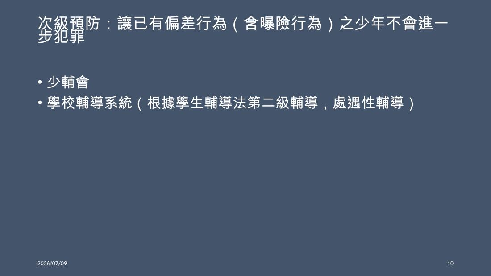
11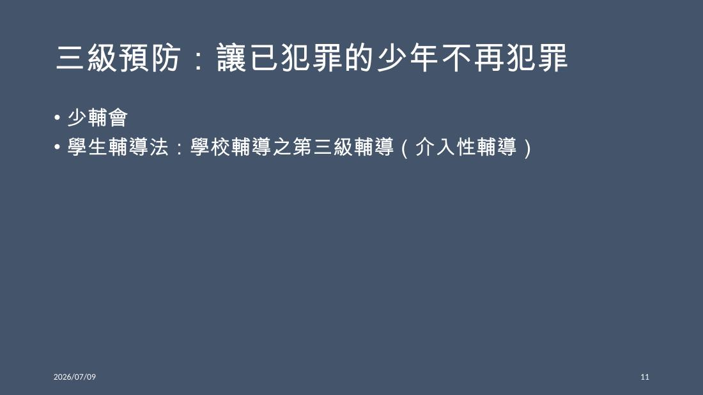
12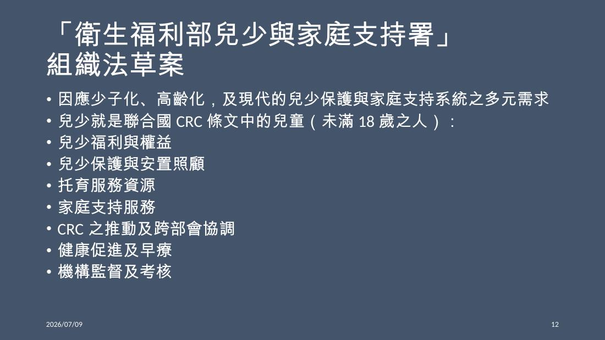
13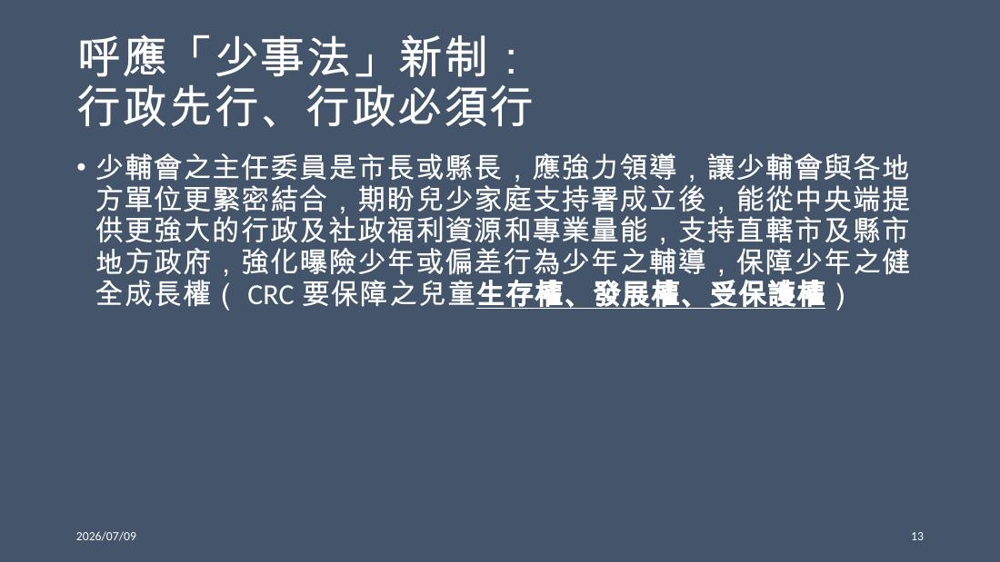
14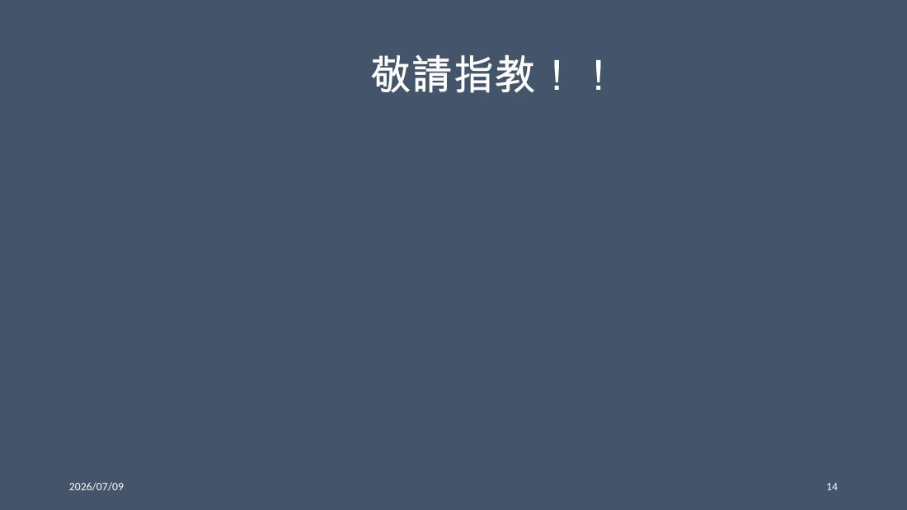
三盟共同呼籲 · 司法相關
呼應本場，三盟主張把跨系統接手機制寫入兒少權法修法，明定學校、社政、司法與醫療的高風險兒少接手、轉介、追蹤與成效檢驗機制。
→ 回論壇手冊看完整三項行動